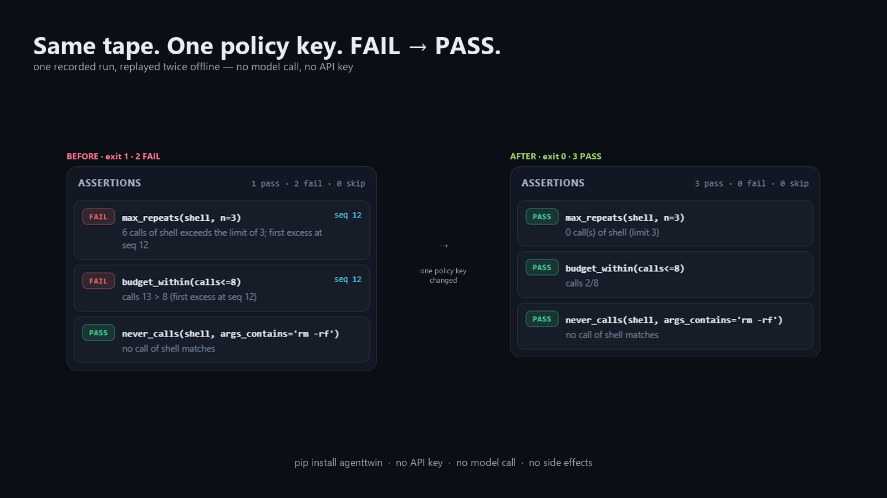

Replay an agent run offline.
AgentTwin records one run of an LLM agent to a JSONL tape, then replays it without calling a model — so a failing run becomes a regression test you can commit. Below: one tape, replayed twice. The first replay is faithful and exits 1 with two failing assertions; the second changes a single strategy key and exits 0 with all three passing. No model call, no API key, no network, no side effects.

- Open the first viewer:
max_repeats(shell, 3)fails atseq 12. Click the failing row and the viewer jumps to that frame. - Open the second one: the same assertions, the same tape, one policy key
(
stop_on_failure: true) — every row is now PASS. - Both pages are the ordinary single-file
report.htmlthis library writes. They work withfile://too, no server needed.